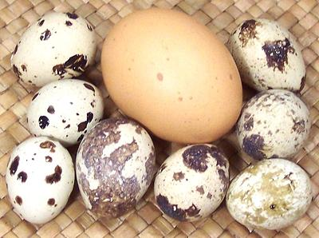

Quail Eggs

High demand for quail eggs began in North America with the spread of
Japanese sushi bars (uni with a raw quail egg broken over it made as
gunkan nigiri sushi is one of my favorites), but they are also
appreciated by other Asian communities. The photo specimens averaged
0.47 ounce, 1.47 inches long and 1.1 inches diameter.
The specked quail eggs found in markets here are generally from a
Japanese quail variety now widely raised for egg production. The photo
specimens came from Ontario, California. Some quail native to North
America and Europe lay white eggs but those quail are raised mainly
for eating, not egg production.
More on Eggs.
In the sushi bars quail eggs are most often used raw, but other Asian
peoples use them cooked. In Thailand they are fried sunny side up and
sold by street vendors 6 or 7 to a bowl. Jars and cans of quail eggs in
brine from Vietnam are quite common now. Quail eggs are also a local
specialty in parts of North America, either hard boiled as garnishes or
pickled as snacks.
Buying:
Quail eggs are generally found in the egg
section of Asian markets packed in tiny plastic egg cartons holding
10 eggs or 15 eggs. They are also available in cans, already hard
cooked and peeled, about 24 per 14 ounce can.
I have noticed that the canned eggs are quite spherical and almost
all yolk, with just a thin white layer. Fresh ones from California are
pointier and have a white to yolk ratio similar to chicken eggs.
Warning:
Buy extras and cook and peel a day in advance
when you aren't rushed. Peeling takes patience and care due to the small
size and delicacy of the eggs, and the tough undershell membrane.
Cooking:
For must uses, they will be hard boiled. Place
eggs in a pan in one layer (without too much free space) with water to
cover by 1/4 inch or so. Bring to a boil, then immediately turn off the
heat. Leave covered and let cool until you can dip a finger in for a
second or so.
Crack each egg a little, and put them in very cold water for 15
minutes or more. They should now peel successfully, mostly.
da_quailz 130416 - www.clovegarden.com
©Andrew Grygus - agryg@clovegaden.com - Photos on this
page not otherwise credited are © cg1 -
Linking to and non-commercial use of this page permitted